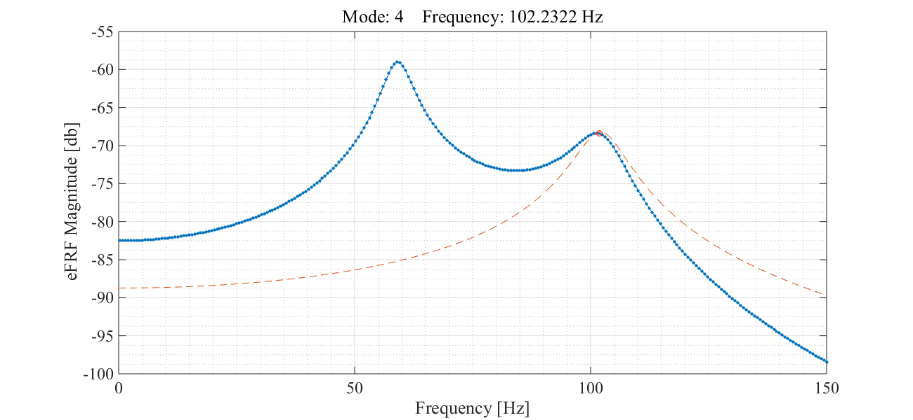

Contents
Vibs Example - 5DOF Lumped Mass Shear Beam
Beam Details and Analysis
jdv 06232015; 07232015; 08162015; 11122015; 11142015;
clear all
Beam Parameters
% section b = 1; % in h = 12; % in I = b*h^3/12; % in^4 A = b*h; % in^2 E = 29e6; % psi % geometry L = 100*12; % ft -> in; total length nn = 5; % number of inner dof (discretization) nel = nn+1; % number of beam elements mchk = 1; % 1 = lumped mass, else = continuous % mass ro = .29; % density [lb/in^3] grav = 386.4; % in/sec^2; mbar = A*ro; % lbf/in - weight mbar = mbar/grav; % lbm/in (m = f/a)
Build Beam
% build bernoulli beam [K,M] = beam_builder(E,I,L,nel,mbar,mchk); % make shear beam % -remove rotation dof ind = 2:2:length(K); K = removerows(K,'ind',ind); K = removerows(K','ind',ind); M = removerows(M,'ind',ind); M = removerows(M','ind',ind);
Eigen Solution
[V,D] = eig(K,M); % solve [val,ind] = sort(diag(D)); % sort eigenvalues V = V(:,ind); % apply sort to eigenvectors W = sqrt(val); % [rad/sec] F = W/2/pi; % [hz] % decouple system matrices Mr = V'*M*V; % modal mass, Mr Kr = V'*K*V; % modal stiffness, Kr % form mass normalized modeshapes Vn = zeros(size(V)); ne = size(V,2); % number of effective modes for ii = 1:ne Vn(:,ii) = V(:,ii)/sqrt(Mr(ii,ii)); end % get scaled modal mass and stiff Mr = Vn'*M*Vn; Kr = Vn'*K*Vn; % add proportional damping dampr = [.05 .05 .05 .05 .05]'; % damping ratio [% critical damping] dampf = -dampr.*W; % damping factor [rad/sec] Wn = sqrt(W.^2 + dampf.^2) % damped natural frequency [rad/sec] root = dampf + 1j.*Wn % form positive poles F = Wn/2/pi % frequencies [hz]
Wn = 1.0e+02 * 0.305638620249057 0.590448473619841 0.835020239275672 1.022686755561057 1.140658859524728 root = 1.0e+02 * -0.015262864341257 + 0.305638620249057i -0.029485589700733 + 0.590448473619841i -0.041698920849346 + 0.835020239275672i -0.051070539452800 + 1.022686755561057i -0.056961785190603 + 1.140658859524728i F = 4.864389721242402 9.397279321766225 13.289759866250037 16.276565238215504 18.154149587492434
Form Residues
Get residue [A]r for each mode r from eigenvectors to form partial fraction expansion
% form radial frequency vector ns = 2^9; % number of spectral samples w = linspace(-150,150,ns); % [rad/sec] inLoc = 1:5; % index for input locations (columns of H) outLoc = 1:5; % index for output locations (rows of H) no = length(outLoc); % number of outputs ni = length(inLoc); % number of inputs ne = 5; % number of effective modes % define modal scaling for unit mass % notes: -true unity mass due to mass normalize eigenvector % -5 modes solved for Qr = 1./(2j.*diag(Mr).*Wn) % get FRF via residues AA = zeros(no,ni,ns); HH = zeros(no,ni,ns); for ii = 1:ne % loop modes % form [A] for mode ii -> [no x ni x ns] AA(:,:,ii) = Qr(ii) * V(:,ii) * V(:,ii)'; for jj = 1:no % loop outputs for kk = 1:ni % loop inputs out = outLoc(jj); % output DOF index in = inLoc(kk); % input DOF index for ll = 1:ns % loop spectral lines % form [H] - add mode ii contribution -> [no x ni x ns] % complex conjugate tt = AA(out,in,ii) ./ (1j*w(ll) - root(ii)) + ... conj(AA(out,in,ii))./(1j*w(ll) - conj(root(ii))); % add each mode for total response HH(jj,kk,ll) = HH(jj,kk,ll) + tt; end end end end % convert HH [no x ni x ns] -> H [ns x no*ni] (legacy format) H = zeros(ns,no*ni); hInd = 1:no*ni; hInd = reshape(hInd,no,ni); for ii = 1:ns for jj = 1:no for kk = 1:ni H(ii,hInd(jj,kk)) = HH(jj,kk,ii); end end end
Qr = 0.000000000000000 - 0.016359189149348i 0.000000000000000 - 0.008468139428571i 0.000000000000000 - 0.005987878813976i 0.000000000000000 - 0.004889082578621i 0.000000000000000 - 0.004383431521396i
THMPER Scenario 2
No link between input/output (i.e. only roving measurements). MDOF parameter id using roving DOF as final shapes and un-scaled input/output shapes for pole estimation/modal filter
nn = 5; % number of global dof to include in = [2 3 4]; % global ref of input dof index out = [1 5]; % global ref of output dof index % find common dof between U and V dp = meta_dp(out,in)
dp =
nr: 2
id: 1
in: []
out: []
Complex Mode Indicator Function
% sort frf [hh,out,in] = frf_sort(HH,out,in); % find frequency index for roots [~,peakLoc] = searchVector(w,Wn); % - mode 4 override peak [~,tt] = searchVector(w,101.9); peakLoc(4) = tt; % - mode 5 slightly lagging, override to peak [~,tt] = searchVector(w,113); peakLoc(5) = tt; % add rank = 1 rank = ones(size(peakLoc)); % get cmif [uu,ss,vv] = cmif_svd(hh); % plot cmif fh = figure; ah = axes; fh.PaperPositionMode = 'auto'; fh.Position = [100 100 1300 600]; cmif_plot(ah,w,ss,[0 150],peakLoc,rank); lh = findobj(ah.Children,'type','line'); set(lh,'linewidth',1.5,'markersize',12); snapnow
Shape Estimation
% get shapes [U,L,Lm,msf] = cmif_getshapes(uu,vv,dp.out,dp.in,peakLoc,rank) % create figure fh = figure; ah = axes; fh.PaperPositionMode = 'auto'; fh.Position = [50 250 1300 600]; % compare to eigenvector for ii = 1:5 fprintf('Mode: %d\n',ii); y1 = V(:,ii); % eigenvector y2 = U(:,ii); % largest dimension % plot modes beam_plotshape2(ah,y1,y2,out,100*12,nn); th = title(['Mode: ' num2str(ii)],... 'fontweight','normal',... 'fontsize',26); snapnow end
Getting shapes... Done.
U =
Columns 1 through 3
0.866797075231463 1.000000000000000 0.005658979207228
1.000000000000000 0.000000000000001 1.000000000000000
0.866797075231464 -1.000000000000000 0.005658979207228
Columns 4 through 5
-1.000000000000000 -0.928673711387527
-0.000000000000000 1.000000000000000
1.000000000000000 -0.928673711387527
L =
Columns 1 through 3
0.707106781186547 0.707106781186547 0.707106781186548
0.707106781186548 -0.707106781186548 0.707106781186547
Columns 4 through 5
0.707106781186548 -0.707106781186547
-0.707106781186547 -0.707106781186548
Lm =
Columns 1 through 3
0.707106781186547 0.707106781186547 0.707106781186548
0.707106781186548 -0.707106781186548 0.707106781186547
Columns 4 through 5
0.707106781186548 -0.707106781186547
-0.707106781186547 -0.707106781186548
msf =
[]
Mode: 1
Mode: 2
Mode: 3
Mode: 4
Mode: 5
Plot tracked cmif
fh = figure; ah = axes; fh.PaperPositionMode = 'auto'; fh.Position = [25 250 1300 600]; lb = 5; rb = 145; thresh = .7; Sk = trackShapes(L,ss,vv,peakLoc,w,lb,rb,thresh); % plot [~,bnds] = searchVector(w,[lb rb]); ph = plot(ah,w(bnds(1):bnds(2)),mag2db(Sk),'.-'); set(ph,'linewidth',1.5,'markersize',12); lg = []; for ii = 1:size(L,2) lg{ii} = ['Shape ' num2str(ii)]; end legend(ah,lg); set(ah,'fontsize',18, 'fontname','times new roman'); grid(ah,'on'); grid(ah,'minor'); xlabel('Frequency [Hz]'); ylabel('Singular Value Magnitude [db]'); snapnow
Pole Estimation
% default fit parameters noterms = ones(size(peakLoc))*5; nob = ones(size(peakLoc))*3; % get poles [eH,pols,frdmp,qr,ma,ehs] = cmif_getpoles(hh,U,Lm,dp,w/2/pi,peakLoc,noterms,nob); % plot efrf fh = figure; ah = axes; fh.PaperPositionMode = 'auto'; fh.Position = [100 100 1300 600]; for ii = 1:nn fprintf('eFRF - Curve Fit - Mode %d\n',ii); plot(ah,w,mag2db(abs(eH(:,ii))),'.-') hold(ah,'all') plot(ah,w,mag2db(abs(ehs(:,ii))),'--') plot(ah,w(peakLoc(ii)),mag2db(abs(eH(peakLoc(ii),ii))),'ro'); hold(ah,'off'); xlim(ah,[0 150]); xlabel(ah,'Frequency [Hz]'); ylabel(ah,'eFRF Magnitude [db]'); grid(ah,'on'); grid(ah,'minor'); th = title(ah,['Mode: ' num2str(ii) ' Frequency: ' num2str(imag(pols(ii))) ' Hz']); set(th,'fontweight','normal'); set(ah,'fontname','times new roman','fontsize',18); lh = findobj(ah.Children,'type','line'); lh(3).MarkerSize = 12; snapnow end
Getting poles... Done. eFRF - Curve Fit - Mode 1
eFRF - Curve Fit - Mode 2
eFRF - Curve Fit - Mode 3

eFRF - Curve Fit - Mode 4
eFRF - Curve Fit - Mode 5
H12 Synthesis
insel = 1; % input dof index - note: in/out switched due to frf size outsel = 1; % output dof index % FRF fprintf('FRF\tOutput: %2d\tInput: %2d\n',in(insel), out(outsel)); % plot [Hs,hs] = frf_synthesize(U,Lm,outsel,insel,qr,pols,w); fh = vibsFRFplot(Hs,hs,insel,outsel,w); hold all % plot exact solution % -note: outsel/insel used w/o out/in indexing % bc hh already reduced from HH ph = plot(fh.Children(2),w,mag2db(abs(squeeze(hh(outsel,insel,:)))),'o--r',... 'linewidth',2,... 'markersize',2,... 'displayname',['H' num2str(in(insel)) num2str(out(outsel)) ' - Actual']); hold off % get old strings lh = fh.Children(1); st = [lh.String {['H' num2str(in(insel)) num2str(out(outsel)) ' - Actual']}]; % append legend entry st{1} = ['H' num2str(in(insel)) num2str(out(outsel)) ' - Estimated']; legend(st); snapnow % Phase fprintf('Phase\tOutput: %2d\tInput: %2d\n',in(insel), out(outsel)); % plot [Hs,hs] = frf_synthesize(U,Lm,outsel,insel,qr,pols,w); fh = vibsPhaseplot(Hs,hs,insel,outsel,w); hold all % plot exact solution ph = plot(fh.Children(2),w,angle(squeeze(hh(outsel,insel,:)))*180/pi,'o--r',... 'linewidth',2,... 'markersize',2,... 'displayname',['H' num2str(in(insel)) num2str(out(outsel)) ' - Actual']); hold off % get old strings lh = fh.Children(1); st = [lh.String {['H' num2str(in(insel)) num2str(out(outsel)) ' - Actual']}]; % append legend entry st{1} = ['H' num2str(in(insel)) num2str(out(outsel)) ' - Estimated']; legend(st,'location','northeast'); snapnow % Impulse Response Function fprintf('IRF\tOutput: %2d\tInput: %2d\n',in(insel), out(outsel)); % plot fs = 200; % sampling freq l = .5; % length [sec] [Hs,hs] = irf_synth(U,Lm,outsel,insel,qr,pols,fs,l); fh = vibsIRFplot(Hs,hs,insel,outsel,fs,l); hold all % plot exact solution h = []; t = 0:1/fs:.5-1/fs; for ii = 1:ne % loop poles % get residue for mode ii AA = Qr(ii) * V(:,ii) * V(:,ii)'; h(:,ii) = AA(out(outsel),in(insel)) * exp(pols(ii)*t) + ... conj(AA(out(outsel),in(insel))) * exp(conj(pols(ii))*t); end h = sum(h,2); ph = plot(fh.Children(2),t(1:length(h)),h,'o--r',... 'linewidth',2,... 'markersize',5,... 'markerfacecolor','r',... 'markeredgecolor','none',... 'displayname',['H' num2str(in(insel)) num2str(out(outsel)) ' - Actual']); hold off % get old strings lh = fh.Children(1); st = [lh.String {['H' num2str(in(insel)) num2str(out(outsel)) ' - Actual']}]; % append legend entry st{1} = ['H' num2str(in(insel)) num2str(out(outsel)) ' - Estimated']; legend(st); snapnow
FRF Output: 1 Input: 2
Phase Output: 1 Input: 2
IRF Output: 1 Input: 2
H52 Synthesis
insel = 2; % input dof index - note: in/out switched due to frf size outsel = 1; % output dof index % FRF fprintf('FRF\tOutput: %2d\tInput: %2d\n',in(insel), out(outsel)); % plot [Hs,hs] = frf_synthesize(U,Lm,outsel,insel,qr,pols,w); fh = vibsFRFplot(Hs,hs,insel,outsel,w); hold all % plot exact solution % -note: outsel/insel used w/o out/in indexing % bc hh already reduced from HH ph = plot(fh.Children(2),w,mag2db(abs(squeeze(hh(outsel,insel,:)))),'o--r',... 'linewidth',2,... 'markersize',2,... 'displayname',['H' num2str(in(insel)) num2str(out(outsel)) ' - Actual']); hold off % get old strings lh = fh.Children(1); st = [lh.String {['H' num2str(in(insel)) num2str(out(outsel)) ' - Actual']}]; % append legend entry st{1} = ['H' num2str(in(insel)) num2str(out(outsel)) ' - Estimated']; legend(st); snapnow % Phase fprintf('Phase\tOutput: %2d\tInput: %2d\n',in(insel), out(outsel)); % plot [Hs,hs] = frf_synthesize(U,Lm,outsel,insel,qr,pols,w); fh = vibsPhaseplot(Hs,hs,insel,outsel,w); hold all % plot exact solution ph = plot(fh.Children(2),w,angle(squeeze(hh(outsel,insel,:)))*180/pi,'o--r',... 'linewidth',2,... 'markersize',2,... 'displayname',['H' num2str(in(insel)) num2str(out(outsel)) ' - Actual']); hold off % get old strings lh = fh.Children(1); st = [lh.String {['H' num2str(in(insel)) num2str(out(outsel)) ' - Actual']}]; % append legend entry st{1} = ['H' num2str(in(insel)) num2str(out(outsel)) ' - Estimated']; legend(st,'location','northeast'); snapnow % Impulse Response Function fprintf('IRF\tOutput: %2d\tInput: %2d\n',in(insel), out(outsel)); % plot [Hs,hs] = irf_synth(U,Lm,outsel,insel,qr,pols,fs,l); fh = vibsIRFplot(Hs,hs,insel,outsel,fs,l); hold all % plot exact solution h = []; for ii = 1:ne % loop poles % get residue for mode ii AA = Qr(ii) * V(:,ii) * V(:,ii)'; h(:,ii) = AA(out(outsel),in(insel)) * exp(pols(ii)*t) + ... conj(AA(out(outsel),in(insel))) * exp(conj(pols(ii))*t); end h = sum(h,2); ph = plot(fh.Children(2),t(1:length(h)),h,'o--r',... 'linewidth',2,... 'markersize',5,... 'markerfacecolor','r',... 'markeredgecolor','none',... 'displayname',['H' num2str(in(insel)) num2str(out(outsel)) ' - Actual']); hold off % get old strings lh = fh.Children(1); st = [lh.String {['H' num2str(in(insel)) num2str(out(outsel)) ' - Actual']}]; % append legend entry st{1} = ['H' num2str(in(insel)) num2str(out(outsel)) ' - Estimated']; legend(st); snapnow
FRF Output: 5 Input: 2
Phase Output: 5 Input: 2
IRF Output: 5 Input: 2
Modal Flexibility
No curvature w/o interior sampling
% pre-al modalFlex = zeros(size(U,1),size(U,1)); % loop modes for modal flex for ii = 1:size(U,2) tmp = U(:,ii)*U(:,ii).'/(-1*ma(ii)*pols(ii)); modalFlex = modalFlex + tmp + conj(tmp); end % get deflections f1 = zeros(length(K),1); % pre-al f1(out) = -1e3; % apply 1kip at modal nodes ONLY y1 = inv(K) * f1; % true solution from stiffness matrix f2 = ones(length(modalFlex),1)*-1e3; % ULS load vector y2 = modalFlex * f2; % modal flexibility % plot exact solution in blue fh = figure; ah = axes; fh.PaperPositionMode = 'auto'; fh.Position = [100 100 1300 600]; % gather spatial coordinates xx = linspace(0,100,nn+2); % x-dim in feet yy = normalizeMode([y1(out) y2]); % normalize modes yn = normalizeMode(y1); xxo = xx(2:end-1); xxo = xxo-xxo(1); xxb = xxo(out); % hold axes hold(ah,'on'); % plot Y1 - full resolution eigenvector plot(ah,xxo,y1(:,1),'o-k',... 'linewidth',2,... 'markeredgecolor','none',... 'markerfacecolor','k',... 'markersize',14,... 'displayname','Exact'); % plot Y2 - estimated plot(ah,xxo(out),y2,'v--k',... 'linewidth',3,... 'markerfacecolor','k',... 'markeredgecolor','none',... 'markersize',18,... 'displayname','Estimated'); % add legend before undeformed plot legend(ah,'location','northeast'); % plot un-deformed plot(xxo,zeros(size(xxo)),'o:k',... 'linewidth',2,... 'markerfacecolor','none',... 'markersize',11); hold(ah,'off'); % format tsize = 26; % text size xlabel(ah,'Beam Length [ft]'); ylabel(ah,'Modal Amplitude'); set(ah,'fontsize',tsize,'fontname','Times New Roman'); xlim(ah,[min(xxo)-5 max(xxo)+5]) tmp = ah.YLim; ylim(ah,[tmp(1) abs(tmp(1))*.3]); grid(ah,'on') grid(ah,'minor') box on
print results
fprintf('\nTotal loads: %i %i\n', sum(f1),sum(f2)) fprintf('\nExact Displacement:\n') fprintf('%f\n',y1) fprintf('\nModal Prediction:\n') fprintf('%f\n',y2) % percent difference tt = (y1(out) - y2) ./ y2 * 100; fprintf('\nPercent Difference: \n'); fprintf('%2.2f\n',tt);
Total loads: -3000 -3000 Exact Displacement: -0.239464 -0.478927 -0.558748 -0.478927 -0.239464 Modal Prediction: -0.510553 -0.579518 -0.510553 Percent Difference: -6.19 -3.58 -6.19